Abstract
My current ARC-AGI-2 submission scores 33.89 on the public leaderboard. It is a transductive solver: a fine-tuned Qwen3-4B generates the answer grid one cell at a time, and the answer is never checked against the training examples. This project adds a second, inductive solver. Qwen3.8-27B writes the transformation rule as a Python function, a harness executes the function on the training inputs, and the model receives the exact mismatching cells until the function reproduces every training pair.
Most improvements came from analysing the model's reasoning traces, identifying information it could not extract reliably from a grid, and supplying that information as a computed fact. The main finding is negative. A program that reproduces every training pair and passes every additional check is correct on the test grid in only 10 of 15 cases (67%), and agreement between independently sampled programs does not raise that rate. The central problem is therefore candidate selection, not program synthesis. The two solvers have not yet been merged into a submission.
01Problem statement
Each ARC task provides a small number of input and output grids that share one hidden transformation, followed by one or more test inputs. Every task uses a different transformation, so the rule must be inferred from the examples alone. A solver may submit two attempts per test grid, and an attempt is correct only if every cell matches. The public evaluation set contains 120 tasks. The competition runs offline on four L4 GPUs with a 12-hour limit.
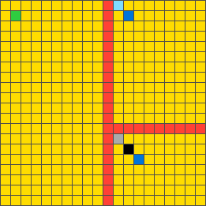
training input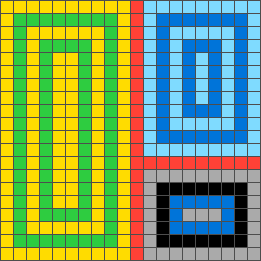
training output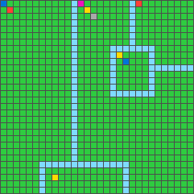
test input, 30×30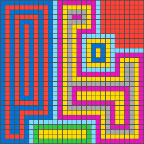
expected output13e47133. Lines divide the grid into regions. Seed pixels in the corner of a region define a colour sequence, and the region is filled with rings of those colours from its edge inward. The test grid is larger than any training grid and contains non-rectangular regions. The inductive solver solved this task after two repair rounds.02Baseline
The baseline is the public NVARC notebook, which scores 33.89. For each task it fine-tunes a Qwen3-4B model on that task's own training pairs, augmented by rotation, reflection and colour permutation into 128 copies. It then decodes candidate answers from 16 views of the test grid and submits the two with the highest model likelihood.
The baseline has one structural weakness. The answer in Figure 1 contains 900 cells. The model must emit 900 correct tokens in sequence, a single error scores zero, and the answer is never compared with the training examples. A program of about 25 lines that encodes the correct rule produces all 900 cells at once. Its correctness on the training pairs can also be established before the test grid is considered, because the training pairs serve as unit tests.
03Approach
- Fact sheet. The harness computes task-level facts: objects and bounding boxes, changed cells, colour transitions, and size relations that hold in every training pair.
- Inspection turn. The model's first turn must be code that inspects the grids. It runs numpy on the actual data with helper functions such as
objects()andpanels()available. Extended reasoning is enabled only after this turn. - Synthesis. The model writes
transform(grid). The harness executes it in a sandbox on every training input. - Repair. If any cell is wrong, the model receives the exact mismatch, for example “row 2: predicted 0000000, expected 1110000”, and revises the function. Up to three repair rounds are allowed.
- Selection. Programs that reproduce every training pair pass through additional checks and a vote, which produce the two submitted answers.
This is the static counterpart of the approach used for ARC-AGI-3. The training pairs play the role of the recorded history, the program is the model's hypothesis, and testing the hypothesis against the history has negligible cost.
04Analysis of reasoning traces
The harness streams the model's reasoning for every attempt to disk. Each change to the harness listed below was motivated by a specific observation in these traces.
| Observation | Change to the harness |
|---|---|
| The model reasoned for 16,000 tokens, reached the limit and returned no program. A single cell lookup cost about 2,000 tokens. | When a reply is truncated, the model's own notes are returned to it with a request for a program. An approximate program can be verified and repaired; a truncated reply cannot. |
| Rows were transcribed digit by digit and miscounted. | Grids are displayed with row and column indices, and the model can execute code on them. |
| Output dimensions were derived by hand on every attempt. | The fact sheet states size rules directly, for example “in every pair the output is the bounding box of colour 8”. |
| About 5,000 tokens were spent before the first inspection of the data. | The first turn runs with extended reasoning disabled and must inspect the data. |
The model wrote if h == 5 and w == 13: out[2, 8] = 1, which memorises a training pair by its size. | The verifier rejects programs that branch on exact training dimensions, and programs that leave the test grid unchanged when every training pair changes. |
Asked to repair an out-of-bounds error, the model wrote out[i, j] = background. | The repair prompt states that a constant fallback is rarely the rule and asks for a second derivation of those cells. |
05Case studies
Off-centre symmetry (task 0934a4d8)
The input is a symmetric pattern with a rectangular region masked out. The required output is the content of the masked region. The first three versions of the harness obtained no program at all, because the model exhausted its budget reading digits. Figure 2 shows the effect of adding computed symmetry facts.
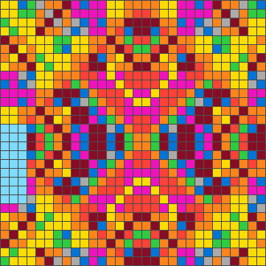
test input; the masked region is at the left edge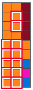
12 cells wrongassumed a centred mirror axis
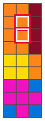
2 cells wrongfact sheet lists all three mirror partners
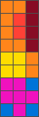
correctfact sheet adds a weak diagonal symmetry
x to 29 - x). The true axis is offset by one cell (31 - x). Once the fact sheet stated the offset explicitly, the model found the rule on its first attempt.The last two cells have no usable mirror partner: the horizontal partner lies outside the grid and the vertical partner lies inside the masked region. The grid is also approximately symmetric about the diagonal, with 49% agreement, which is well above chance but far from exact. This was added to the fact sheet and labelled as a weak cue. One of three programs used it as a last resort and was correct. It lost the vote two to one and was submitted only because two attempts are allowed.
Ambiguous anchoring (task 221dfab4)
The task recolours every sixth row. Three of four programs wrote if y % 6 == 0, which counts rows from the top. Both training grids have 29 rows, and at that height counting from the top and counting from the marker at the bottom select the same rows. The test grids have 25 and 30 rows. The training pairs cannot distinguish the two hypotheses.
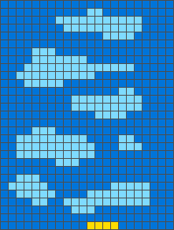
training input, 29 rows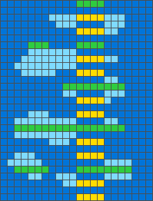
training output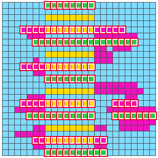
118 cells wrongrows counted from the top
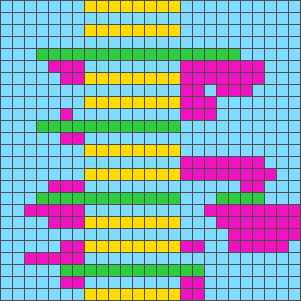
correctrows counted from the marker
The correct program lost the vote three to one. It was selected by a robustness criterion: each program is executed on reflected and rotated copies of the training pairs, and programs that remain correct are preferred. A program that follows the marker is invariant to reflection, and one that counts from row 0 is not. The correct program scored 1.00 on this criterion and the others scored 0.43.
Structure in the added cells (task 142ca369)
The model traced diagonals cell by cell for about 40,000 tokens without identifying the structure of the added cells, because a list of changed cells carries no shape information. The harness now groups added cells into straight segments and reports each segment with its endpoints and the objects it touches.
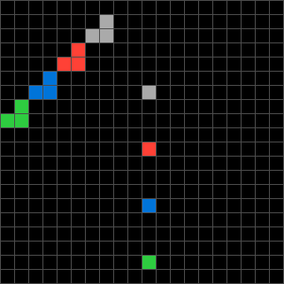
input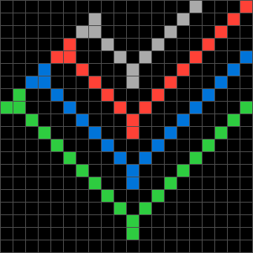
output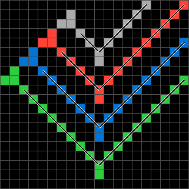
segments reported by the harness: two per colour, meeting at the single pixelExact on the training pairs, incorrect on the test grid (task 28a6681f)
The blue cells in this task behave like a liquid. They leave their original position and fill the enclosed cavities level by level from the bottom.
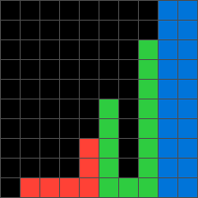
training input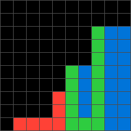
training output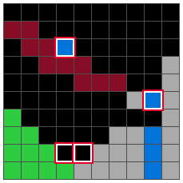
4 cells wrongprogram output
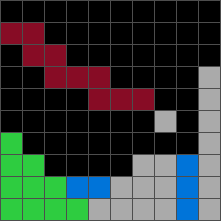
expected output06Results
Every program produced in the saved runs (11 tasks, 18 test grids) was executed again under the current verification checks.
| Quantity | Value |
|---|---|
| Test grids for which at least one program passed every check | 15 of 18 |
| Of those, grids on which the selected answer was correct | 10 of 15 (67%) |
| The same, restricted to grids where two or more programs agreed | 3 of 5 (60%) |
Two conclusions follow. First, reproducing every training pair and passing every current check gives a correct answer about two times in three. Second, agreement between samples of the same model is not independent evidence, because the samples share the same misconceptions, as task 28a6681f shows. The sample is small and these estimates will change.
On the most recent 20-task run, which was stopped early, six tasks had finished. Four were solved, one had one of two test grids correct, and 28a6681f was incorrect. Harder tasks, such as 142ca369 and 16b78196, do not reach a program that reproduces the training pairs within three repair rounds.
07Combining the two solvers
The intended system submits the verified program's answer as one attempt and keeps a baseline answer as the other. An early version of my notes stated that this combination can only add solved tasks. That statement is incorrect. The baseline already produces two answers, so giving one attempt to a program's answer removes a baseline answer. If the removed answer was correct and the program belongs to the incorrect third, a solved grid becomes unsolved.
The merge is therefore treated as a selection of two answers from up to four candidates. By default it never displaces the baseline's first answer, and it reports the number of grids gained and the number lost. The best policy is an empirical question that requires running both solvers on the same complete task set.
08Limitations and future work
- There is no merged submission, so 33.89 remains the only leaderboard result.
- All experiments use a hosted or self-served 27B model that produces up to 19,000 reasoning tokens per reply. This does not fit the offline budget of four L4 GPUs for 12 hours, which is shared with the baseline.
- The saved traces (every reply, program and verification report) are intended as training data for a smaller local model. That work has not started.
- The selection problem remains open. Executing a program establishes that it fits the training pairs. It does not establish that the program is still correct when the grid changes.